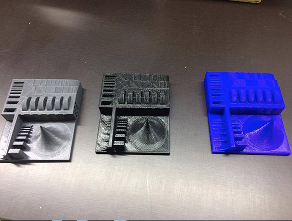
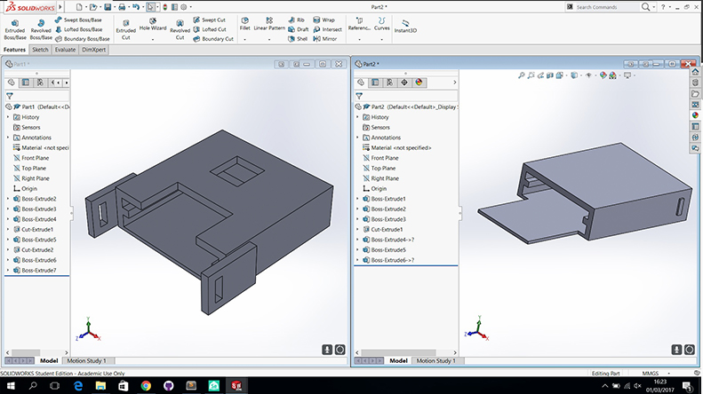
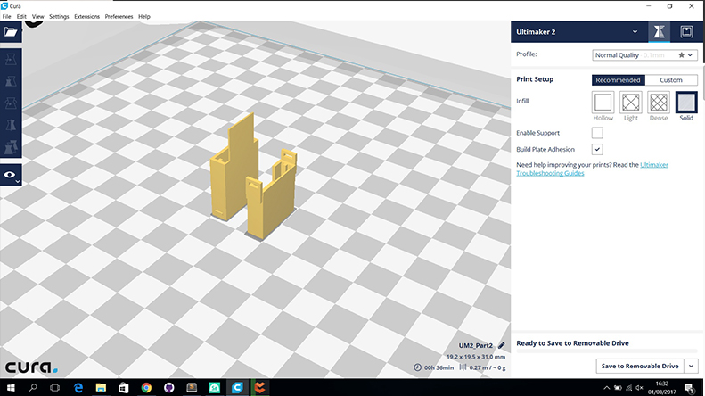
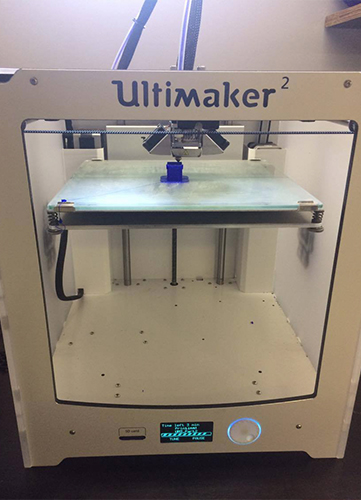
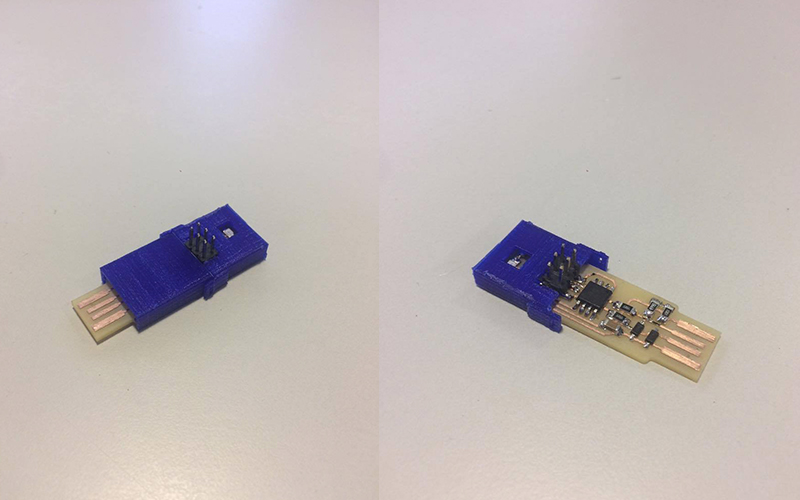
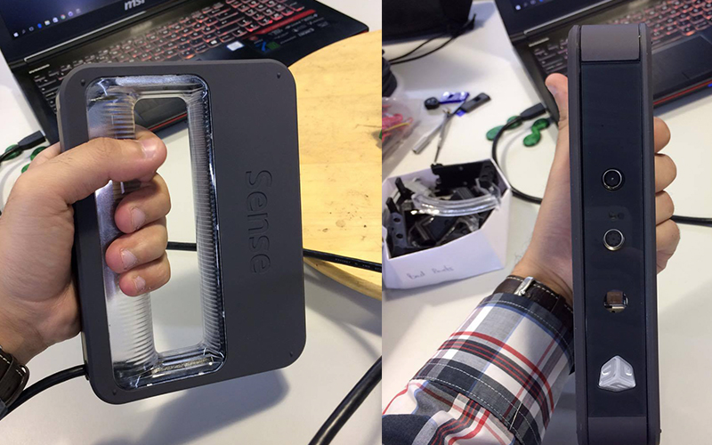
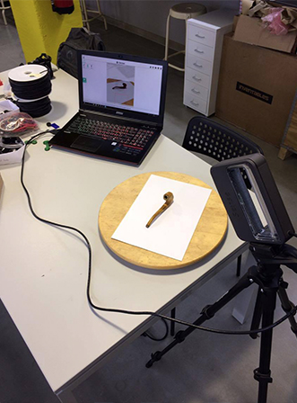
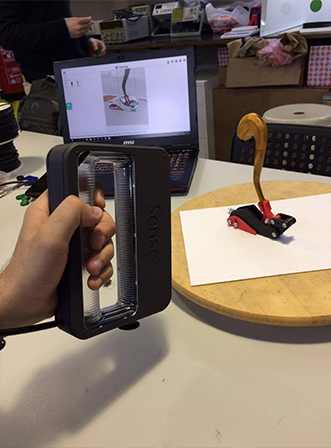
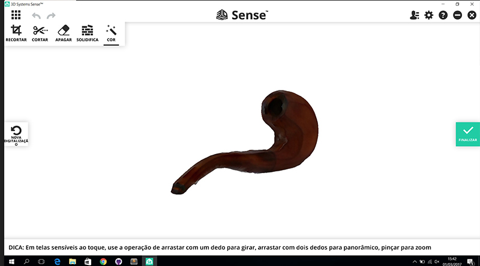

3D Printing
We make in group this prints to test the printers. In gray color was printed by BLOCKS, the black by ULTIMAKER 2 and the blue by PRUSA i3. The best impression was the BLOCKS.
In this week i draw a box for my PCB. I draw the model in SOLIDWORKS, to print this pieces i make in two parts and to join the two parts i create a docking system.
I use CURA software to generate gcode to the 3d printer in this case i use a ULTIMAKER 2. I put in normal quality and infill solid.
 This is a final result of my print with my PCB.
3D Scanning
To make the 3D scanning i use this scanner SENSE of 3D SYSTEMS.
I make scanning of smoking pipe. I try two method first i use tripod and put the scanner in tripod static and put the object in a rotate table for scanning all face of obejct.
The second method i scanning manually the object, the object stay static and i rotate the scanner around of object.
This is final result of my scanning, but have some noise because i lost the object reference sometimes and the scanning accumulated some noise.
